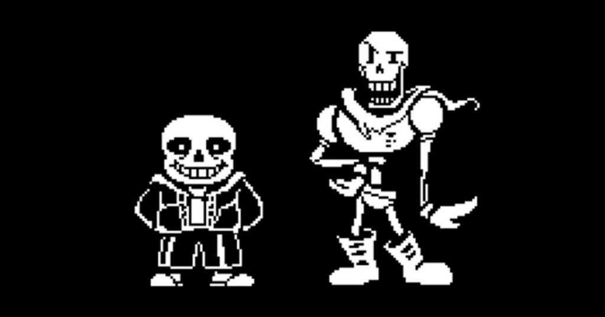
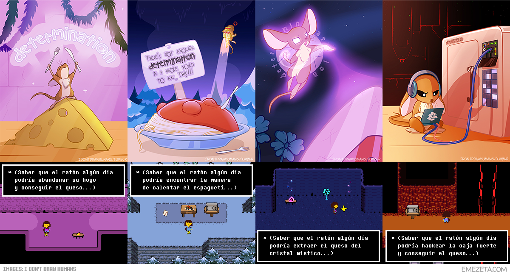
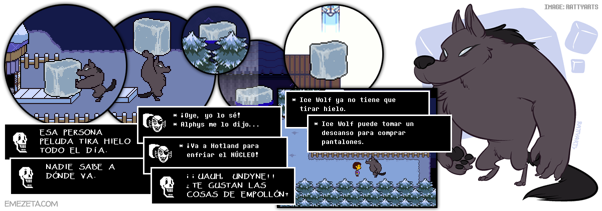
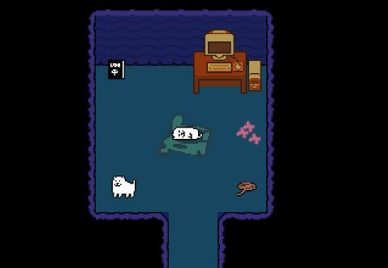
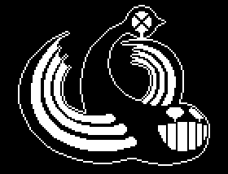
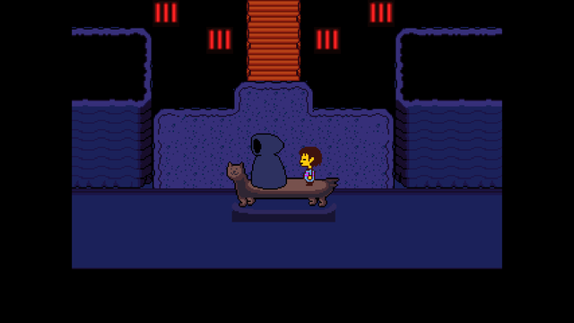
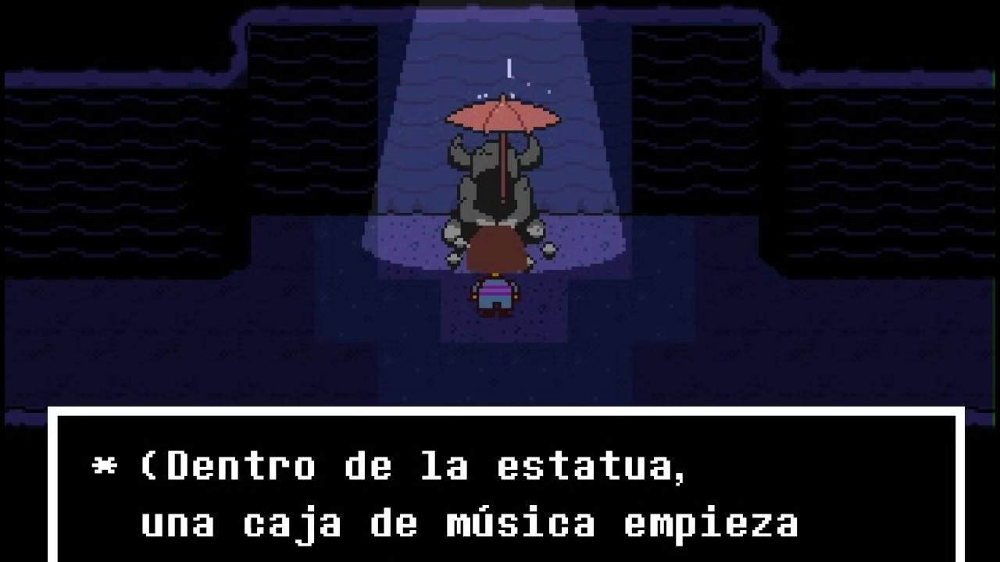
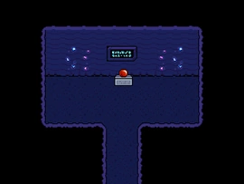
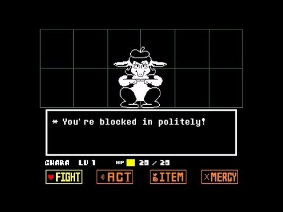
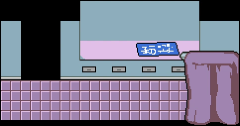

15 Curiosidades de Undertale
Undertale es un videojuego RPG Indie desarrollado en el año 2015. Este es considerado como una obra maestra por muchas personas debido a la originalidad de su historia, sus carismaticos personajes y la gran inmensidad de posibilidades que este ofrece, a pesar de ser un juego que se puede terminar en pocas horas. Por eso, a continuación les presentamos 15 curiosidades sobre undertale.
-
Nombres del jugador
Antes de comenzar a jugar, se le da la oportunidad al jugador de indicar el nombre al humano caído, con el que jugará durante toda la partida. Al margen del nombre que hayamos decidido escoger, hay ciertas opciones que no se pueden elegir o muestran un mensaje gracioso al escribirlas (generalmente de personajes con el mismo nombre):
Además de estas, hay varias opciones más, como por ejemplo, nombres como aaaaaa (¿No eres muy creativo...?), Papyru (sin s, que nos permite usarlo), Chara (que muestra el llamativo mensaje «El nombre verdadero»), tEmmiE o Woshua, entre muchos otros.
Lo más interesante de esto es que, si estableces Frisk como nombre, activarás el modo difícil del juego, donde será más complicado vencer a los enemigos en las batallas o encontrarás menos ítems consumibles de vida. Sin embargo, este modo difícil sólo dura hasta llegar al final de las ruinas.
-
Frisk y Chara: Ruta pacifista y Ruta genocida
Una de las características más interesantes de Undertale es la no-linealidad. Además de que el juego tiene múltiples eventos que suceden por acciones previas tomadas por el jugador, muchas otras ocurren por puro azar o por visitar un lugar en el momento oportuno, lo que hace muy fácil perderse partes o que no encuentres todo lo que esconde este maravilloso juego en una sola partida.
La descripción de Undertale en Steam es «El juego RPG en el que no tienes que destruir a nadie.». Aunque no es obligatorio que sea así, si es un buen consejo de como debería jugarse por primera vez. Según las acciones del jugador, se pueden tomar varios caminos:
- La ruta neutral: Es el camino más habitual que seguiría el jugador en su aventura, intentando no matar a ningún personaje, eligiendo siempre la opción de perdonar.
- La ruta pacifista: Una vez terminada la ruta neutral, dependiendo de las acciones del jugador, podemos llegar a esta ruta, donde ayudaremos a Undyne y Alphys, descubriendo el laboratorio original del subsuelo, donde se puede aprender más sobre lo que ocurrió en el subsuelo en el pasado. Además, esta ruta puede desembocar en otra denominada ruta pacifista verdadera, donde descubres el verdadero final de la historia, del que hablaremos más adelante.
- La ruta genocida: Otra de las opciones que brinda el juego es el ir contracorriente e intentar matar a todos los personajes, escogiendo siempre la opción luchar. Esta ruta es aconsejable realizarla como última opción, una vez conozcas la historia y a los diferentes personajes del juego, y así disfrutarla más.
Si escogemos la ruta pacifista, realmente estamos jugando en nombre de Frisk, el último humano caído al subsuelo, que es la representación de la bondad y la piedad. Por otro lado, si realizamos la ruta genocida, descubriremos que somos (o más bien, nos vamos convirtiendo) en Chara, el primer humano caído al subsuelo hace ya bastantes años, símbolo de la muerte y la maldad.
-
Los hermanos Sans y Papyrus
Tras comenzar el juego, conocer a Flowey y a Toriel, y finalmente abandonar las ruinas, llegamos al área de los alrededores de Snowdin, el pueblo nevado de Undertale.
A los primeros que conoceremos serán a Sans y Papyrus, dos divertidos esqueletos hermanos que deben su nombre a dos tipografías con mala reputación por su sobreuso: Comic Sans y Papyrus. El primero de ellos, Sans, es un esqueleto tranquilo y amigable que ayudará al jugador y se mantendrá en segundo plano la mayor parte del tiempo (actuando sólo para contar chistes malos), y el segundo, Papyrus, comienza siendo nuestro enemigo, ya que quiere capturar a un humano para demostrar su valía e ingresar en la Guardia Real, pero sus numerosas e ineficaces trampas, así como su inocente visión del mundo hace que nos encariñemos enseguida con él y dejemos de verlo como un enemigo.
-
Los ratones a lo largo de la historia
A lo largo del juego, así como cuando perdemos en alguna batalla, se nos habla de la determinación, esa fuerza del alma del jugador que hace que continue en su aventura y no se rinda. En el juego, hay varios puntos de guardado donde aparece una mesa con comida y se nos anima a continuar con el juego, sólo con la idea de que el ratón consiga su objetivo.
 -
Ice wolf, el lobo que tira hielo
Ice Wolf es un misterioso lobo que aparece en Snowdin levantando bloques de hielo que salen de una torre y lanzándolas al río una detrás de otra. A medida que avanzamos en el juego, nos vamos cruzando con pantallas donde se ve el hielo flotando por el agua.
Algo más adelante, cerca del núcleo, nos encontraremos que el bloque de hielo cae en una zona y se funde en el agua. Si la llamamos al teléfono en el sitio oportuno, Undyne nos aclara que Alphys le dijo que es el sistema de refrigeración del núcleo.
Finalmente, si lo visitamos al finalizar nuestra aventura y haber destruido la barrera, veremos que ha dejado de lanzar bloques de hielo y nos dice que ya no tiene que hacerlo, que por fin puede tomarse un descanso e ir a comprarse unos pantalones.
-
Otras curiosidades de Snowdin
A lo largo del área de Snowdin puedes encontrar multitud de personajes y curiosidades, como por ejemplo, algunos jefes-perro, entre los que se encuentra Lesser Dog, un perro que cuanto más lo acaricies, más contento se pondrá y más figuras de nieve hará.
También encontrarás un muñeco de nieve que quiere ver mundo y te puede dar un copo suyo, que si lo llevas en el inventario, Sans te dirá al final del juego que has hecho a un muñeco de nieve muy feliz. Por otro lado, en la ruta genocida puedes acabar con el.
Algunos otros detalles hacen genial la zona de Snowdin, como por ejemplo, la lámpara de forma conveniente o la zona en la que al deslizarse por el hielo, saldremos de una cueva con nieve en la cabeza. Si volvemos a entrar y salir repetidas veces por esta zona, veremos que tendremos una figura de nieve diferente en la cabeza de forma aleatoria: una casa, un pájaro, un sombrero e incluso el Annoying Dog.
-
Toby Fox dentro de su propio juego
Existe una zona del juego, con una puerta cerrada, que es posible que hayas visitado pero no hayas conseguido entrar. Esta zona no tiene especial relevancia para la historia, pero se puede acceder en una segunda partida si el jugador esquiva todos los nombres de los agradecimientos en la escena de créditos del juego.
Si es así, la puerta estará abierta y dentro nos encontraremos con la habitación del creador del juego, Anoying Dog, un perro con el que Toby Fox se suele representar y que incluso lo utiliza para mostrar cuando el jugador intenta manipular las partidas guardadas
En la habitación encontramos la cuerda con la que Papyrus ató al perro en su trampa mortal, varias piezas de un puzzle, un ordenador y el supuesto juego Undertale (ambos utilizados mediante un conversor ladrido-texto), residuos de perro y el propio perro, el cuál hace referencia a la dura tarea de corregir bugs de un juego.
-
Glyde: Jefe oculto
Si llegamos a esta zona con la misteriosa puerta cerrada y aún no hemos perdonado o vencido a Papyrus, hay algo que podemos hacer ahí. Existe un jefe oculto llamado Glyde, que aparecerá si nos mantenemos durante 3 minutos caminando por fuera de la cabaña de la puerta misteriosa:
Glyde es un jefe oculto que busca la atención del jugador y que se puede vencer simplemente aplaudiéndole dos veces y luego no hacer nada durante el resto de la batalla.
-
Los viajes por Waterfall
Al pasar de Snowdin a Waterfall, entramos en un mundo mágico lleno de cascadas, luces y rincones brillantes. Uno de los misteriosos personajes que más suelen llamar la atención es el llamado El hombre del río (Riverman), un enigmático encapuchado (similar a la representación de una parca) que mientras canta Tra la la y nos dice frases con consejos, nos lleva rápidamente en una barca (que se convierte en animal en algunas ocasiones) a un punto de Snowdin, Waterfall o Hotland. En la comunidad de Undertale se bromea hasta con la posibilidad de que realmente es Annoying Dog subido a un taburete.
 -
La estatua y el paraguas
Uno de los momentos más emotivos de Undertale ocurre cuando el protagonista encuentra una misteriosa estatua, algo rota por el paso del tiempo, a la cuál le caen algunas gotas desde la parte superior de la galería. El jugador, puede acceder a la zona de la derecha, llevarse un paraguas y ponerselo a la estatua para que no se moje.
Al hacer esto, comenzará a sonar una cajita de música dentro de la estatua, con la melodía Memory, mientras se ven los símbolos para resolver el puzzle del piano que está en la zona de la izquierda.
De forma oficial no se sabe mucho sobre la estatua, puesto que Undyne afirma que siempre la ha visto ahí, y Papyrus no sabe nada al respecto. La teoría que veo más probable es que sea la estatua que se construyó en memoria de Asriel y Chara (la caja de música reproduce una versión de la canción que se asocia a Asriel en otros momentos del juego). La estatua muestra la silueta de un personaje con cuernos (probablemente, Asriel en forma adulta), junto a unos fragmentos rotos en el suelo. Es posible que la estatua original mostrara a Asriel sosteniendo a Chara para llevarla al campo de flores doradas.
-
El puzzle del piano y el artefacto legendario
Con los símbolos que aparecen en la parte superior de la estatua, podemos tocar la melodía en el piano que aparece en el mismo área de Waterfall. Con ello se abrirá una puerta que da a una habitación que tiene un artefacto legendario, en forma de bolita roja.
Si intentamos agarrarla, nos dirá que tenemos demasiados perros en el inventario, por lo que nos sugiere que la solución es tirar el Perro molesto (nuevamente, el Annoying Dog) para poder llevarnos el artefacto, momento en el cuál el perro que acabamos de soltar, se lleva la pelota y nos deja como al principio
 -
Mysteryman (¿Gaster?)
Quizás, el misterio más grande de Undertale es aquel que rodea a Gaster. En el juego, se menciona a un personaje llamado el Doctor W.D. Gaster, que era el científico real antes de que Alphys ocupara su puesto. No se sabe demasiado sobre él, pero hay varias teorías que conectan a Gaster con Mysteryman, un personaje que puede aparecer en el juego si se accede en un momento oportuno entre las pantallas del ratón y el queso místico y el telescopio de Sans, en Waterfall.
Si así lo hacemos, nos aparecerá un pasillo que puede contener (con una probabilidad muy baja, de un 10%) una puerta gris. Al abrirla, dicha puerta nos lleva a una habitación vacía donde sólo hay un personaje fantasmal, que al interactuar con él, sonríe y desaparece.

-
El club de Arte secreto (So Sorry: Jefe oculto)
Al igual que Glyde, existe otro jefe oculto en Hotland, llamado So Sorry. Se puede desbloquear si subimos hacia arriba en el área donde encontramos el delantal manchado. Aparecerán unas baldosas mágicas de cristal que nos llevarán a una localización secreta con un cartel que nos indica que se trata del Club de Arte.
En el cartel de dicha ubicación, se nos indica que la próxima reunión del club será el 10 de octubre a las 8. Si cambiamos la hora del sistema a esa fecha concreta y volvemos a acceder a la zona del Club de Arte, aparecerá el jefe oculto, So Sorry, llegando tarde.
 -
La habitación de Sans
Antes de luchar contra Asgore, llegamos a una sala amarilla, con grandes ventanales. Es la sala donde Sans nos juzga y da un repaso a todas nuestras acciones en el juego. En esta parte es donde se comprende que el papel de Sans va más allá de un simple personaje, ya que tiene algunas habilidades que no se pueden intuir a simple vista y hay que ahondar algo más en el personaje y su pasado.
Si al llegar a esta parte del juego, volvemos a cargarlo y a volver a presenciar la escena, veremos que Sans se da cuenta de que lo has hecho (has viajado en el tiempo y ya sabías lo que iba a decir), por lo que te da un código secreto varias veces para que vuelvas a «viajar en el tiempo» y se lo digas, y así sepa que tu también eres un viajero del tiempo.
Si lo haces correctamente, obtendrás la llave de la habitación de Sans, en la que encontrarás bromas, y más bromas, y una llave plateada que te da acceso al taller de Sans, que está en la parte trasera de su casa de Snowdin.

-
El taller de Sans
Con la llave plateada podemos acceder al taller secreto de Sans, donde nos encontramos unos planos (con símbolos extraños o mala caligrafía) y una extraña máquina rota. En los cajones del taller podemos encontrar un emblema y varias fotografías. Existen muchísimas teorías sobre lo ocurrido, y aunque no son oficiales, las más plausibles argumentan que Sans está relacionado con la construcción de esa misteriosa máquina, con Gaster (quién podría ser el padre de Sans y Papyrus). Justamente, en la ruta genocida, al pelear contra Sans, él utiliza un arma que, literalmente, se llama Gaster Blaster, lo que refuerza aun más la idea de que ambos personajes estan relacionados.
